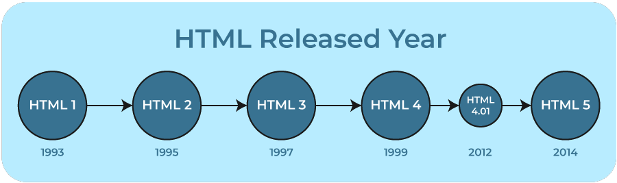

HTML History
HTML was created by Sir Tim Berners-Lee in late 1991 but was not officially released. It was published in 1995 as HTML 2.0. HTML 4.01 was published in late 1999 and was a major version of HTML.

HTML is a very evolving markup language and has evolved with various versions updating. Long before its revised standards and specifications are carried in, each version has allowed its user to create web pages in a much easier and prettier way and make sites very efficient.

- HTML 1.0 was released in 1993 with the intention of sharing information that can be readable and accessible via web browsers. But not many of the developers were involved in creating websites. So the language was also not growing.
- Then comes HTML 2.0, published in 1995, which contains all the features of HTML 1.0 along with a few additional features, which remained the standard markup language for designing and creating websites until January 1997 and refined various core features of HTML.
- Then comes HTML 3.0, where Dave Raggett introduced a fresh paper or draft on HTML. It included improved new features of HTML, giving more powerful characteristics for webmasters in designing web pages. But these powerful features of the new HTML slowed down the browser in applying further improvements.
- Then comes HTML 4.01, which is widely used and was a successful version of HTML before HTML 5.0, which is currently released and used worldwide. HTML 5 can be said for an extended version of HTML 4.01, which was published in the year 2012.